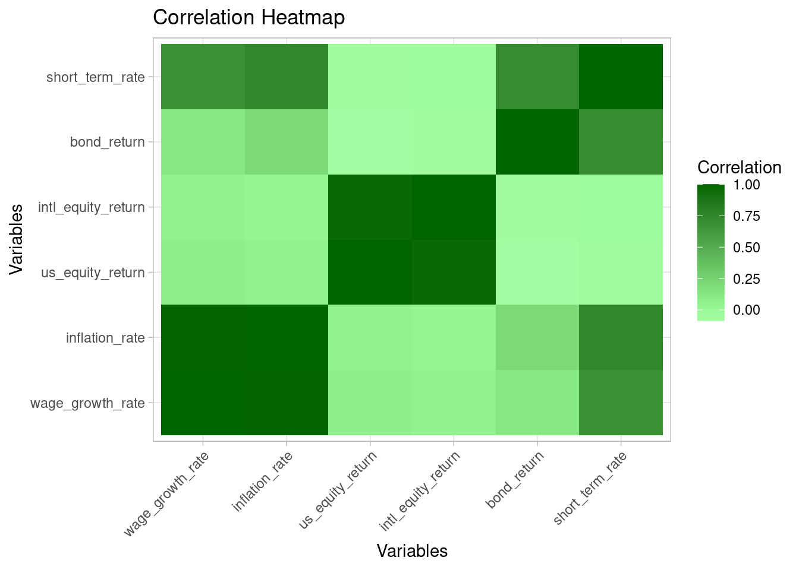
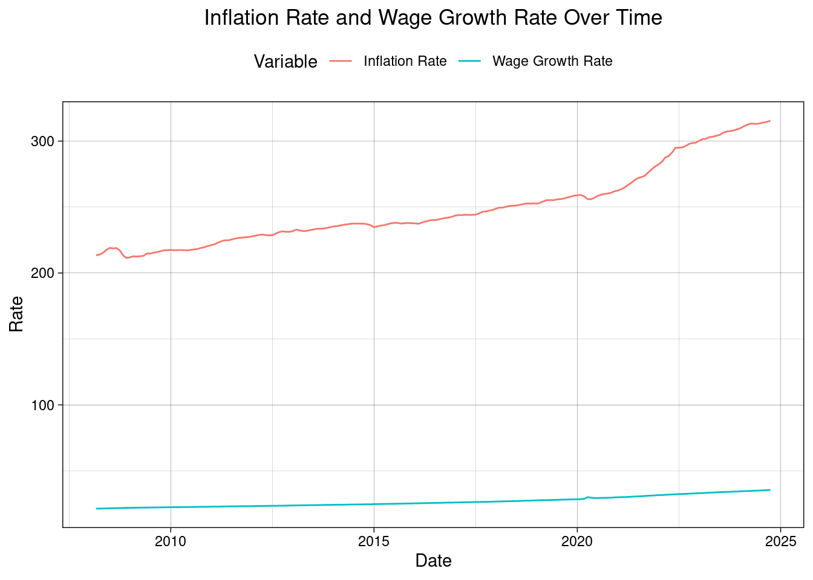
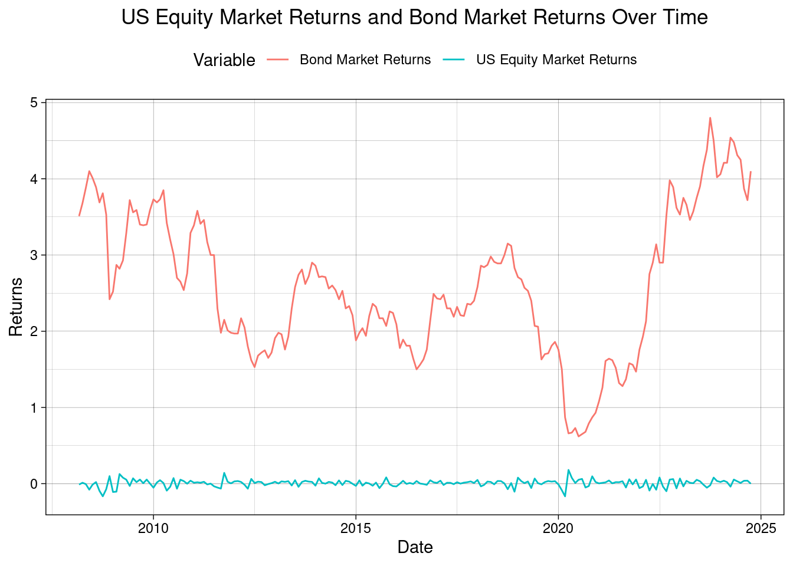

Code
library(tidyverse)
library(ggplot2)
library(DT)
library(httr2)
library(jsonlite)
library(reshape2)Author: Thanh Dao
Last Updated: December 2nd, 2024 @11:20PM
This report discusses which retirement plan offered by CUNY is the “better” option, based on historical financial data and a bootstrap inference strategy. The two plans are the Teachers Retirement System (TRS) and the Optional Retirement Plan (ORP); after thorough analysis, it can be determined that the TRS is “better” for those who prefer income stability with a guaranteed, inflation-adjusted income without market-related risks. The ORP is “better” for those with a higher risk tolerance that are looking for growth opportunities, all while maintaining conservative withdrawal rates.
When hired at CUNY, new faculty must choose one of two retirement plans. This choice is permanent and can’t be changed, so the choice must be made carefully. This report will use historical financial data and an inference strategy in order to determine which retirement plan would be best.
In the TRS plan, CUNY will continue to pay the employee a fraction of their salary until death after they retire. The rates are as follows:
The retirement benefit is calculated based on the final average salary of the employee, which is based on the final three years salary. The benefit will be paid out equally over 12 months, and can be calculated as follows, where N is the number of years served:
The benefit will be increased annually by 50% of the CPI, rounded up to the nearest tenth of a percent. This inflation adjustment is done each September, and the CPI is used to aggregate the monthly CPI of the previous 12 months.
The ORP plan functions like a 401(k), where both the employee and employer contribute to a retirement account invested in mutual funds. These investments grow tax-free until retirement, with unused funds passed to heirs. It’s a defined-contribution plan, meaning contributions are fixed, but the account balance depends on market performance. At retirement, employees can withdraw funds at their discretion, typically at a 4% annual rate, while unwithdrawn funds continue earning market returns. Social Security and other savings may help cover expenses if funds are exhausted.
The funds available in an ORP account depends on the investments chosen; it can be assumed that OPR participants invest in Fidelity Freedom Funds, with the following asset allocation:
The employee’s monthly contribution rate is as follows:
The employer’s contribution is fixed as follows:
This report will utilize a bootstrap resampling strategy, which relies on the following principle: \[ \text{Var}_{\P_n}[f(X_1, \dots, X_n)] \to \text{Var}_{\P}[f(X_1, \dots, X_n)]\]
Here, \(\text{Var}_{\P}[f(X_1, \dots, X_n)]\) is the sampling variance of the estimator \(f\) under the true distribution, and \(\text{Var}_{\P_n}[f(X_1, \dots, X_n)]\) is the variance of that same estimator under the sample distribution. In simple terms, if we repeat \(f\) on our sample data many times, the variance will approximate the “true” sampling variance. Bootstrapping itself comes into play through resampling, rather than using the sample data as is.
R PackagesFirst, we will download the necessary R packages that will be used throughout the report.
AlphaVantage is a commercial stock market data provider. For this report, the free subscription tier will be used. A free API key can be created through this link. Mine is stored in a txt file.
Now that we have access to AlphaVantage, we’ll create a function to fetch the data.
# Define a function to fetch data from AlphaVantage
get_alpha_data <- function(symbol,
interval = "TIME_SERIES_DAILY",
api_key) {
url <- paste0("https://www.alphavantage.co/query?function=",
interval,
"&symbol=",
symbol,
"&apikey=", api_key,
"&outputsize=full&datatype=json")
# Send request, check response
response <- request(url) |>
req_perform()
if (response |>
resp_status() != 200) {
stop("Failed to retrieve Alpha Vantage data. HTTP Status: ", response |>
resp_status())}
data <- fromJSON(response |>
resp_body_string())
timeseries <- data[["Time Series (Daily)"]]
if (is.null(timeseries)) stop("Failed to retrieve Alpha Vantage data for symbol: ",
symbol)
df <- as.data.frame(do.call(rbind, timeseries))
df$date <- rownames(df)
rownames(df) <- NULL
# Data cleaning + processing
df <- df |>
rename(close = `4. close`) |>
mutate(
date = as.Date(date),
close = as.numeric(close)) |>
arrange(date)
df <- df |>
mutate(month = format(date, "%Y-%m")) |>
group_by(month) |>
summarize(
monthly_return = last(close) / first(close) - 1,
.groups = 'drop') |>
mutate(date = as.Date(paste0(month, "-01"))) |>
select(date, monthly_return)
return(df)}FRED is a repository maintained by the Federal Reserve Bank of St. Louis that is free to access. Similarly to AlphaVantage, a free API key can be created through this link. This is also stored in a txt file.
Now that we have access to FRED, we’ll create a function to fetch the data.
get_fred_data <- function(series_id, api_key) {
url <- paste0("https://api.stlouisfed.org/fred/series/observations?series_id=",
series_id,
"&api_key=",
api_key,
"&file_type=json")
# Send request, check response
response <- request(url) |>
req_perform()
if (response |>
resp_status() != 200) {
stop("Failed to retrieve FRED data. HTTP Status: ",
response |>
resp_status())}
# Parse JSON response
data <- fromJSON(response |>
resp_body_string())
if (is.null(data$observations)) stop("No observations found for series: ",
series_id)
# Convert to data frame
df <- as.data.frame(data$observations) |>
mutate(
date = as.Date(date),
value = suppressWarnings(as.numeric(value))) |>
filter(!is.na(value)) |>
select(date, value)
return(df)}For this analysis, we need historical data covering the following:
FRED (Average Hourly Earnings Growth)FRED (Consumer Price Index)AlphaVantage (SPY)AlphaVantage (ACWI)FRED (10-Year Treasury Yield)FRED (2-Year Treasury Yield)We will identify and download the data series of each of the above inputs, from both AlphaVantage and FRED.
# Wage growth rate
wage_growth <- get_fred_data("CES0500000003",
fred_key) |>
mutate(month = format(date, "%Y-%m")) |>
group_by(month) |>
summarize(wage_growth_rate = last(value),
.groups = 'drop') |>
mutate(date = as.Date(paste0(month, "-01"))) |>
select(date, wage_growth_rate)
# Inflation
inflation <- get_fred_data("CPIAUCSL",
fred_key) |>
mutate(month = format(date, "%Y-%m")) |>
group_by(month) |>
summarize(inflation_rate = last(value),
.groups = 'drop') |>
mutate(date = as.Date(paste0(month, "-01"))) |>
select(date, inflation_rate)
# US Equity Market total returns
us_equity_market <- get_alpha_data("SPY", "TIME_SERIES_DAILY",
av_key) |>
rename(us_equity_return = monthly_return)
# International Equity Market total returns
intl_equity_market <- get_alpha_data("ACWI",
"TIME_SERIES_DAILY",
av_key) |>
rename(intl_equity_return = monthly_return)
# Bond market total returns
bond_market <- get_fred_data("GS10",
fred_key) |>
mutate(month = format(date, "%Y-%m")) |>
group_by(month) |>
summarize(bond_return = last(value),
.groups = 'drop') |>
mutate(date = as.Date(paste0(month, "-01"))) |>
select(date, bond_return)
# Short-term debt returns
short_term_debt <- get_fred_data("DGS2", fred_key) |>
mutate(month = format(date, "%Y-%m")) |>
group_by(month) |>
summarize(short_term_rate = last(value),
.groups = 'drop') |>
mutate(date = as.Date(paste0(month, "-01"))) |>
select(date, short_term_rate)For ease, we’ll merge all of the data into one.
Now that we’ve acquired the data, we will perform some basic exploratory data analysis to identify key properties.
To examine the correlation between these aspects, we’ll create a table to display it, and a correlation heat map.
# Exclude the date column
cor_data <- merged_data |>
select(-date)
# Compute correlation matrix
cor_matrix <- cor(cor_data, use = "complete.obs")
# Melt correlation matrix for visualization
cor_melt <- melt(cor_matrix)
# Data table
## Remove self-correlations and mirrored values
cor_table <- cor_melt |>
filter(Var1 != Var2) |> # Remove self-correlations
mutate(pair = pmap_chr(list(Var1, Var2),
~paste(sort(c(.x, .y)), collapse = " - "))) |>
distinct(pair, .keep_all = TRUE) |> # Remove mirrored pairs
select(-pair)
## Descending order + round
cor_table <- cor_table |>
arrange(desc(value)) |>
mutate(value = round(value, 4))
datatable(setNames(cor_table,
c("Variable 1", "Variable 2", "Correlation Coefficient")),
caption = "Variable Correlations")# Plot the heat map
ggplot(cor_melt, aes(Var1, Var2, fill = value)) +
geom_tile() +
scale_fill_gradient2(low = "white",
mid = "palegreen",
high = "darkgreen",
midpoint = 0) +
theme_light() +
labs(title = "Correlation Heatmap",
x = "Variables",
y = "Variables",
fill = "Correlation") +
theme(axis.text.x = element_text(angle = 45, hjust = 1))
In this heat map, the darker green indicates a higher correlation, and the lighter green / white indicates a lower correlation.
Specifically, we can see the highest correlation is between inflation rate and wage growth rate, with a correlation coefficient of 0.9892.
The following graph will better highlight this.
ggplot(merged_data, aes(x = date)) +
geom_line(aes(y = inflation_rate,
color = "Inflation Rate")) +
geom_line(aes(y = wage_growth_rate,
color = "Wage Growth Rate")) +
labs(title = "Inflation Rate and Wage Growth Rate Over Time",
x = "Date",
y = "Rate",
color = "Variable") +
theme_linedraw() +
theme(plot.title = element_text(hjust = 0.5),
legend.position = "top")
This means that as the inflation rate increases, the wage growth rate also tends to increase, and the two variables move in nearly perfect alignment. In an economic context, wage growth and inflation are often strongly linked because higher inflation typically pressures employers to raise wages to help workers keep up with rising living costs. Conversely, strong wage growth can contribute to higher inflation as consumers have more income to spend, increasing demand for goods and services.
The lowest correlation is between Bond market total returns and US Equity Market total returns, with a correlation coefficient of -0.0862.
The following graph will better highlight this.
ggplot(merged_data, aes(x = date)) +
geom_line(aes(y = us_equity_return,
color = "US Equity Market Returns")) +
geom_line(aes(y = bond_return,
color = "Bond Market Returns")) +
labs(title = "US Equity Market Returns and Bond Market Returns Over Time",
x = "Date",
y = "Returns",
color = "Variable") +
theme_linedraw() +
theme(plot.title = element_text(hjust = 0.5),
legend.position = "top")
This means changes in bond market returns provide little to no information about changes in U.S. Equity Market returns. In an economic context, bonds and stocks are often considered different asset classes with unique risk and return profiles. While they can occasionally move inversely during market downturns (as investors shift to safer assets), the weak correlation here suggests no consistent relationship over the time period analyzed. This lack of correlation aligns with the idea of diversification in investment portfolios, where combining stocks and bonds can help reduce overall risk.
We will now calculate the long-term monthly averages for each variable.
# Calculate the long-term means
long_term_means <- merged_data |>
select(-date) |>
summarize_all(~ round(mean(.x, na.rm = TRUE), 4))
# Calculate the long-term SD
long_term_sd <- merged_data |>
select(-date) |>
summarize_all(~ round(sd(.x, na.rm = TRUE), 4))
# Mean data table
datatable(setNames(long_term_means,
c("Wage Growth",
"Inflation Rate",
"US Equity Market Total Returns",
"International Equity Market Total Returns",
"Bond Market Returns",
"Short-Term Debt Returns")),
caption = "Long-Term Means of Variables")Wage Growth: The average is 26.6905, with a standard deviation of 3.9729, pointing to stable long-term wage growth and relatively low volatility.
Inflation Rate: The average is 249.212, with a standard deviation of 28.8624, pointing to a history of substantial volatility. This rate is significantly higher than the other variables, due to its identity as an index.
US and International Equity Market Total Returns: The US average and standard deviation are 0.0072 and 0.0481, respectively. The international average and standard deviation are 0.0042 and 0.051, respectively. The standard deviations are fairly similar, pointing to similar levels of volatility.
Bond Market and Short-Term Debt Returns: The average bond market return is 2.5848, which is higher than that of short-term debt returns of 1.4406. However, short-term debt returns have a higher volatility due to the standard deviation of 1.4122, compared to that of the bond market return with 0.9244.
We will now compare the values of the TRS and ORP formulas at the first month of retirement. We will assume that the hypothetical employee joined CUNY in the first month of the historical data, and retired at the end of the final month.
# Assumptions
starting_salary <- 50000
working_years <- as.integer(difftime(max(merged_data$date),
min(merged_data$date),
units = "days") / 365.25) # Leap years
retirement_age <- 65
retirement_month <- max(merged_data$date)
# Create a function to calculate the TRS monthly pension
calculate_trs <- function(starting_salary,
wage_growth,
inflation,
years_worked) {
salary <- starting_salary
salaries <- numeric(years_worked)
for (i in 1:years_worked) {
growth_rate <- wage_growth$wage_growth_rate[i %% nrow(wage_growth) + 1] / 100
inflation_rate <- inflation$inflation_rate[i %% nrow(inflation) + 1] / 100
salary <- salary * (1 + growth_rate + inflation_rate)
salaries[i] <- salary}
final_average_salary <- mean(tail(salaries, 3))
if (years_worked <= 20)
{pension <- 0.0167 * final_average_salary * years_worked}
else if (years_worked == 20)
{pension <- 0.0175 * final_average_salary * years_worked}
else {pension <- (0.35 + 0.02 * (years_worked - 20)) * final_average_salary}
monthly_pension <- pension / 12
return(monthly_pension)}
# Create a function to calculate the ORP monthly income
calculate_orp <- function(starting_salary,
wage_growth,
us_equity_market,
bond_market,
years_worked,
employer_contribution_rate = 0.08,
withdrawal_rate = 0.04) {
salary <- starting_salary
account_balance <- 0
for (i in 1:years_worked) {
growth_rate <- wage_growth$wage_growth_rate[i %% nrow(wage_growth) + 1] / 100
equity_return <- us_equity_market$us_equity_return[i %% nrow(us_equity_market) + 1]
bond_return <- bond_market$bond_return[i %% nrow(bond_market) + 1] / 100
market_return <- 0.6 * equity_return + 0.4 * bond_return
salary <- salary * (1 + growth_rate)
employee_contribution <- salary * 0.06
employer_contribution <- salary * employer_contribution_rate
total_contribution <- employee_contribution + employer_contribution
account_balance <- account_balance * (1 + market_return) + total_contribution}
monthly_withdrawal <- account_balance * withdrawal_rate / 12
return(monthly_withdrawal)}Now that we have created functions to calculate the TRS monthly pension and ORP monthly income, we can calculate them.
ORP First Month Retirement Income: $ 2463.79 Based on this information, we can determine that the TRS first month retirement income is more beneficial than that of the ORP, with the TRS’s income being calculated at $2,557.31, based on the last 3-year-average salary and fixed formula adjustments. On the other hand, the ORP’s income was calculated at $2,463.79, based on the investment account balance and a 4$ withdrawal rate.
We will now conduct our Monte Carlo analysis.
# Monte Carlo simulation function
simulate_monte_carlo <- function(num_simulations,
starting_balance,
monthly_trs_pension,
fixed_withdrawal_rate,
inflation_rate,
market_return_data) {
results <- tibble(simulation_id = numeric(),
month = numeric(),
trs_income = numeric(),
orp_income = numeric(),
orp_balance = numeric())
for (sim in 1:num_simulations) {
# Set a fixed seed for reproducibility in each simulation
set.seed(sim)
sampled_returns <- tibble(
us_equity_return = sample(market_return_data$us_equity_return,
size = nrow(market_return_data),
replace = TRUE))
trs_income_stream <- simulate_trs(
monthly_pension = monthly_trs_pension,
retirement_years = retirement_years,
inflation_rate = inflation_rate)
orp_simulation <- simulate_orp(
account_balance = starting_balance,
retirement_years = retirement_years,
fixed_withdrawal_rate = fixed_withdrawal_rate,
market_return_rate = sampled_returns$us_equity_return)
orp_income_stream <- orp_simulation$withdrawal
orp_balance_stream <- orp_simulation$balance
results <- results |>
bind_rows(tibble(simulation_id = sim,
month = 1:(retirement_years * 12),
trs_income = trs_income_stream,
orp_income = orp_income_stream,
orp_balance = orp_balance_stream))}
return(results)}
simulate_trs <- function(monthly_pension,
retirement_years,
inflation_rate) {
pension <- numeric(retirement_years * 12)
for (i in 1:length(pension)) {
inflation_adjustment <- ifelse(i %% 12 == 1,
(1 + inflation_rate) - 1, 0)
if (i == 1) {pension[i] <- monthly_pension}
else {pension[i] <- pension[i - 1] * (1 + inflation_adjustment)}}
return(pension)}
simulate_orp <- function(account_balance,
retirement_years,
fixed_withdrawal_rate,
market_return_rate) {
withdrawal <- numeric(retirement_years * 12)
balance <- numeric(retirement_years * 12)
for (i in 1:(retirement_years * 12)) {
market_return <- market_return_rate[i %% length(market_return_rate) + 1]
account_balance <- account_balance * (1 + market_return)
withdrawal_amount <- account_balance * fixed_withdrawal_rate / 12
withdrawal[i] <- min(account_balance, withdrawal_amount)
account_balance <- account_balance - withdrawal[i]
balance[i] <- account_balance}
return(list(withdrawal = withdrawal, balance = balance))}
# Set parameters
set.seed(2024)
num_simulations <- 200
starting_balance <- 200000
monthly_trs_pension <- 2200
fixed_withdrawal_rate <- 0.04
inflation_rate <- 0.03
retirement_years <- 30
market_return_data <- tibble(
us_equity_return = rnorm(360, mean = 0.05 / 12, sd = 0.06))
simulation_results <- simulate_monte_carlo(
num_simulations = num_simulations,
starting_balance = starting_balance,
monthly_trs_pension = monthly_trs_pension,
fixed_withdrawal_rate = fixed_withdrawal_rate,
inflation_rate = inflation_rate,
market_return_data = market_return_data)# What is the probability that an ORP employee exhausts their savings before death?
orp_depletion_probability <- simulation_results %>%
filter(orp_balance == 0) %>%
summarize(prob = n_distinct(simulation_id) / num_simulations) %>%
pull(prob)
cat("Probability of ORP funds depletion: ", round(orp_depletion_probability * 100, 2), "%\n")Probability of ORP funds depletion: 0 %With a 4% withdrawal rate, the probability that the ORP employees exhaust their savings before death is 0%.
# What is the probability that an ORP employee has a higher monthly income in retirement than a TRS employee?
orp_better_than_trs_probability <- simulation_results %>%
group_by(simulation_id) %>%
summarize(orp_better = mean(orp_income > trs_income)) %>%
summarize(prob = mean(orp_better > 0.5)) %>%
pull(prob)
cat("Probability ORP income exceeds TRS income: ", round(orp_better_than_trs_probability * 100, 2), "%\n")Probability ORP income exceeds TRS income: 2.5 %The probability that an ORP employee were to earn a higher monthly income than a TRS employee is 2.5%, pointing to the TRS’ consistency with providing a more stable and predictable income, compared to the ORP’s potential for higher returns in some cases.
Based on this information, it can be determined that the TRS is “better” for those who prefer income stability with a guaranteed, inflation-adjusted income without market-related risks. The ORP is “better” for those with a higher risk tolerance that are looking for growth opportunities, all while maintaining conservative withdrawal rates. However, it is important to note that the probability that an ORP employee were to earn a higher monthly income than a TRS employee is 2.5%, which is another point in favor of the TRS.